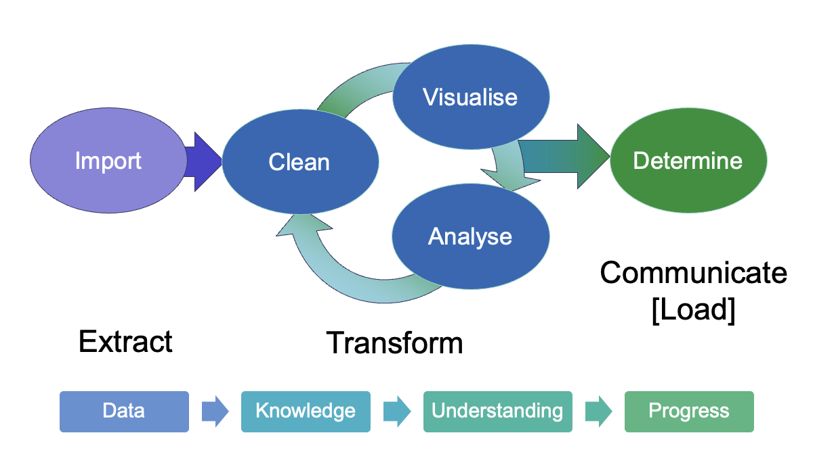

Exploratory Data Analysis (EDA)#

What is EDA?#
Process of examining, summarising and visualising data
A first “triaging” step in a workflow to assess a set of data.
Aims to uncover patterns, detect anomalies, and gain insights before applying formal models or statistical tests.
Why is EDA important?#
Understand data structure – Identify key variables, distributions, and relationships.
Detect errors and biases – Spot missing values, outliers, or inconsistencies.
Generate hypotheses – Reveal trends that can guide further investigation.
Choose appropriate models – Decide whether data fits assumptions for statistical methods or machine learning models.
Examples of EDA (chemistry context)#
Reaction kinetics – Plotting rate vs. concentration may reveal non-linear trends that indicate appropriate rate-order models.
Spectroscopy – Visualising raw IR or NMR spectra can help identify baseline shifts requiring additional processing or unexpected peaks before analysis.
Materials science – Initial exploration of crystal structure datasets may reveal possible correlations between lattice parameters and properties.
EDA Techniques#
The aim of EDA is an initial assessment of
Whether values are “reasonable” or as expected.
Shape of data and distributions.
Relationships between variables (features).
To achieve this, generally a variety of techniques are required; most commonly involving some/all of the following:
Descriptive statistics
Mean, median, standard deviation
Quantitative ways to assess and compare central tendency (e.g. mean/median/mode) Spread of data (e.g. range, standard deviation, percentile ranges)
Visualisations
Histograms, scatter plots, box plots
Missing data checks
Heatmaps, bar charts of missing values
Correlation analysis
Pairwise plots, correlation matrices
Quantify strength and direction of relationships between variables
Why is visualisation important - notebook
See also